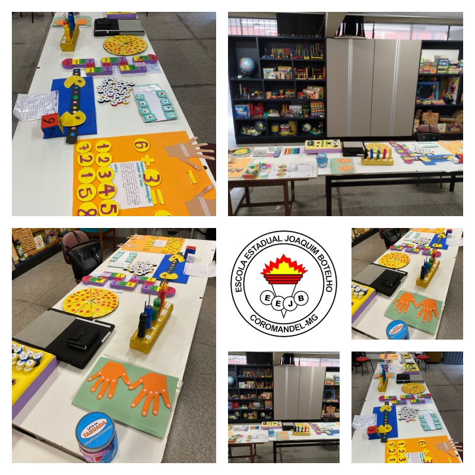
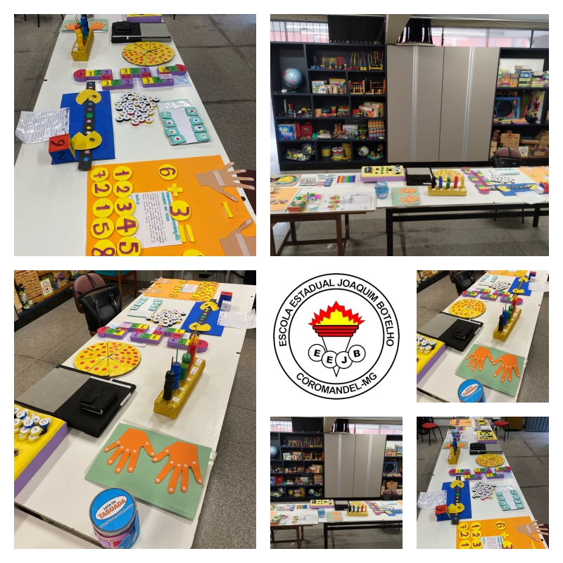

Meio Ambiente e Sustentabilidade
A Escola Estadual Joaquim Botelho, localizada em Coromandel-MG, tem como missão promover
educação pública de qualidade e formar cidadãos éticos, críticos e preparados para
os desafios do futuro
Fundada em homenagem a Joaquim Botelho, personalidade de relevante contribuição à
história local, nossa escola construiu uma trajetória de décadas educando gerações de coromandelenses.
Guiamos nosso trabalho por valores como ética, respeito à diversidade, excelência no ensino e
forte integração com a comunidade.
Nossos objetivos são garantir a aprendizagem efetiva, combater a evasão escolar, preparar os alunos
para o ENEM e vestibulares e promover uma formação integral que vá além da sala de aula, desenvolvendo
cidadãos preparados para a vida.

 


üìç Rua La√©rcio Mendes de Sairre 646, Coromandel, MG
üìû Telefone: (34) 3841-2629